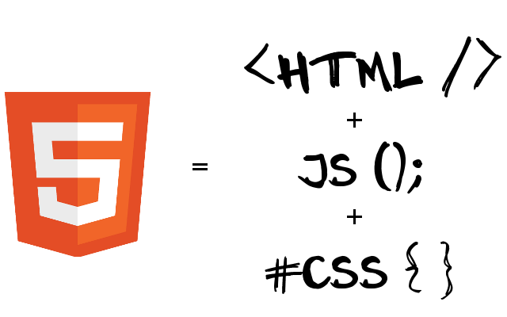

<!DOCTYPE html>
HTML5 de Mendoza para el Mundo

Julian Alessandro
Matias Alvarez Duran
Octubre, 2012
Agenda
- Que es HTML5?
- Evolución
- Doctypes
- Features
- Modernizr
- Twitter Bootstrap
- Less CSS
- Semantica y Formularios
- Offline
- Storage
- File API
- Web Sockets
- Transiciones y Estilos CSS3
- Recursos y Ejemplos
Que es HTML5?

Que es HTML5?
<!DOCTYPE html
PUBLIC "-//W3C//DTD XHTML 1.0 Strict//EN"
"http://www.w3.org/TR/xhtml1/DTD/xhtml1-strict.dtd">
<html>
<head>
<title>Old HTML ¬¬</title>
</head>
<body> ... </body>
</html>
<!DOCTYPE html>
<html>
<head>
<title>HTML5</title>
</head>
<body> ... </body>
</html>
Con solo cambiar el DOCTYPE, actualizamos a HTML5 !!!
Evolución
Doctypes
Los navegadores tienen varios motores de renderización.
Esto les permite renderizar:
- Contenido HTML5
- Contenido con versiones antiguas de HTML
Los 'Doctypes' activan cada motor según corresponda.
Doctypes - Tipos
- Quirks Mode
- Se ignora el formato contemporaneo de la Web para poder renderizar paginas hechas en los 90’s
- Standards Mode
- Los documentos son manejados utilizando los últimos standards que contiene el navegador. En HTML5 este modo se llama “Sin quirks”
- Almost Standards Mode
- Se creó para tratar una particularidad en el manejo de las tablas en CSS2 en los navegadores modernos (Firefox, Safari, Chrome, Opera (since 7.5) e IE8)
Features
- Offline
- Application Cache, Local Storage, Web SQL, Indexed DB, Online/Offline events
- Storage
- File Access API
- Connectivity
- WebSockets, Server-Sent Events
- File Access
- Native Drag & Drop, Dragging Files
Features
- Semantics
- Form Fields, Microdata, Semantic Markup
- Multimedia
- Audio, Video
- 3D / Graphics
- 2D Canvas, WebGL, SVG, 3D CSS transforms, and SMIL
- Presentation
- 2D Transformations, Transitions, 3D Transforms and WebFonts
Modernizer
- Pequeña librería JavaScript que utiliza la técnica llamada 'Feature Detection'.
- Detecta si el browser posee implementaciones nativas de tecnologías modernas.
- User Agent sniffing
- Feature Detection
Modernizr - Funcionamiento
- Testea más de 40 features modernos
- Crea un objeto JavaScript que contiene los resultados de los tests
- Permite crear los nuevos elementos de HTML5, actualizando browsers antiguos
- Permite utilizar fácilmente la técnica: Progressive Enhancement
- Carga de polyfills y fallbacks condicionales (script loader)
Modernizr - Polyfills
A piece of code that provides the technology that you, the developer, expect the browser to provide natively.
http://remysharp.com/2010/10/08/what-is-a-polyfill/
Modernizr - Loader
Modernizr.load({
test: Modernizr.geolocation,
yep : 'geo.js',
nope: 'geo-polyfill.js'
});
- Evita la descarga innecesaria de librerías
- Modernizr.load puede cargar scripts asincrónicamente o en paralelo
Twitter Bootstrap
Librería que brinda un conjunto de componentes CSS/JS para desarrollar sitios HTML.
- Layouts
- Tipografías
- Tablas
- Formularios
- Botones
- Navegación
Less CSS
Lenguaje dinámico que permite generar estilos CSS más rápido y sencillo
- Variables
- Mixins
- Reglas Anidadas
- Funciones y Operaciones
Semantica
- Nuevos elementos para representar partes de una página
- Controles de audio/video nativos
- Controles para alfabetos particulares
- Polyfill: modernizr
Formularios
- Nuevos controles para formularios
- Nuevas formas de ingresar datos
- Se agregan nuevos atributos (placeholder, autofocus, etc.)
- Polyfill: html5widgets
Offline
- Permite navegación offline
- Aumenta la velocidad de carga del sitio (recursos cacheados)
- Disminuye trafico de red y carga del server
- Polyfill: html5-gears
Storage
- Almacenamiento del lado del cliente (guardar, leer y buscar datos)
- Sandboxed: Las cuatro APIs de storage solo pueden utilizar datos de un solo origen (mismo protocolo, dominio y puerto)
- Los browsers imponen límites de almacenamiento (el tamaño depende del mecanismo. Por defecto: 5MB Web Storage, 25MB Web SQL Database, Indexed Database prohibido)
- Transacciones: Aseguran la integridad de datos
- Modos síncronos (modo bloqueante) y asíncronos (se crea un nuevo thread implícito)
- Polyfill: Persist JS
- Información detallada de cada implementación
File API
- Drag & Drop nativo
- Drag & Drop de archivos
- FileReaders y FileWriters para lectura/escritura
- Polyfill: FileReader
- Polyfill: FileSaver
Web Sockets
- Provee comunicación Full-Suplex
- Conexión TCP: mayor velocidad, confiable, mayor eficiencia
- Permite comunicación con cualquier dominio (cross origin communication)
- Problemas con algunos proxy servers que no soportan "upgrade" de conexiones HTTP
- Se necesita cambiar el paradigma de desarrollo del back-end
- Polyfill: Socket.IO
- Como funciona Socket.IO?
Transiciones y Estilos CSS3
- Nuevos y complejos selectores
- Web Fonts: Permite agregar tipografías poco comunes
- Media Queries: Responsive Web Design
- Transiciones
- Transformaciones
- Polyfill: selectivizr
- Polyfill: Transformie
- Polyfill: Respond
Recursos y Ejemplos
Modernizer: http://modernizr.com/docs/#installing
Polyfills:
https://github.com/Modernizr/Modernizr/wiki/HTML5-Cross-browser-Polyfills
Web Sockets:
Musica Colaborativa:
http://labs.dinahmoe.com/plink/#
Paint:
http://paintwith.me/
http://connorhd.co.uk/project/pixelatr/
Multimedia:
Audio:
http://www.html5rocks.com/en/tutorials/webaudio/games/
CSS3 Filter Effects:
http://html5-demos.appspot.com/static/css/filters/index.html
Video:
http://www.html5rocks.com/en/tutorials/getusermedia/intro/
Recursos y Ejemplos
WebGL (Canvas 3D):
http://disc.uncontrol.com/
http://www.satine.org/research/webkit/snowleopard/snowstack.html
Canvas 3D con Video:
http://craftymind.com/factory/html5video/CanvasVideo.html
Presentations:
ImpressJS:
http://bartaz.github.com/impress.js/#/bored
Deck JS:
http://imakewebthings.com/deck.js/
Reveal JS:
http://lab.hakim.se/reveal-js
HTML5 en YouTube:
http://www.youtube.com/html5
Muchas Gracias!
Julian Alessandro
julian.alessandro@globallogic.com
Matias Alvarez Duran
matias.alvarez@globallogic.com